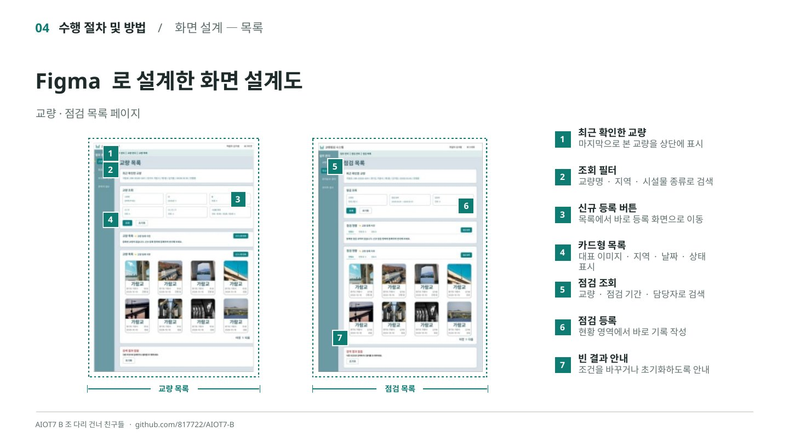
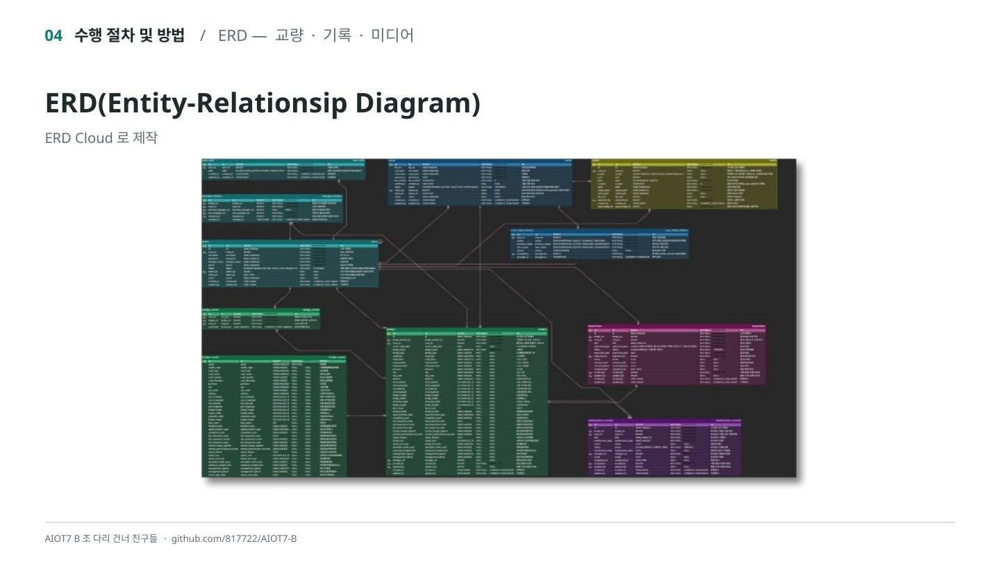
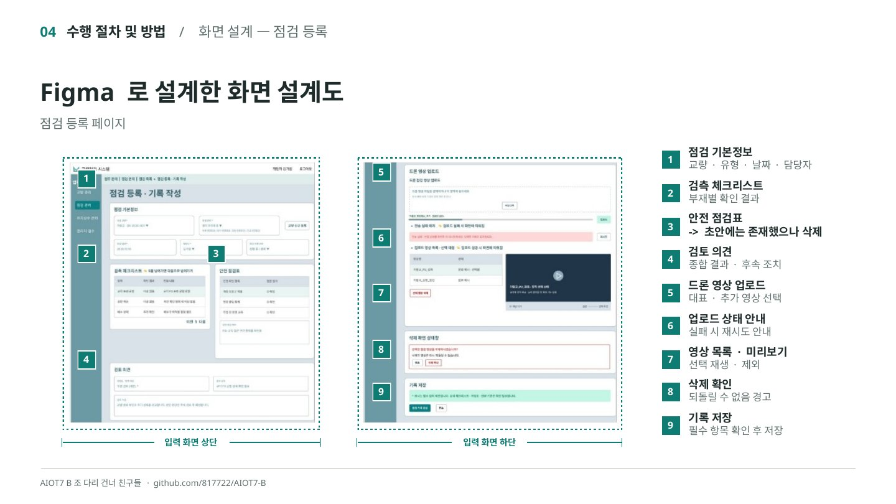
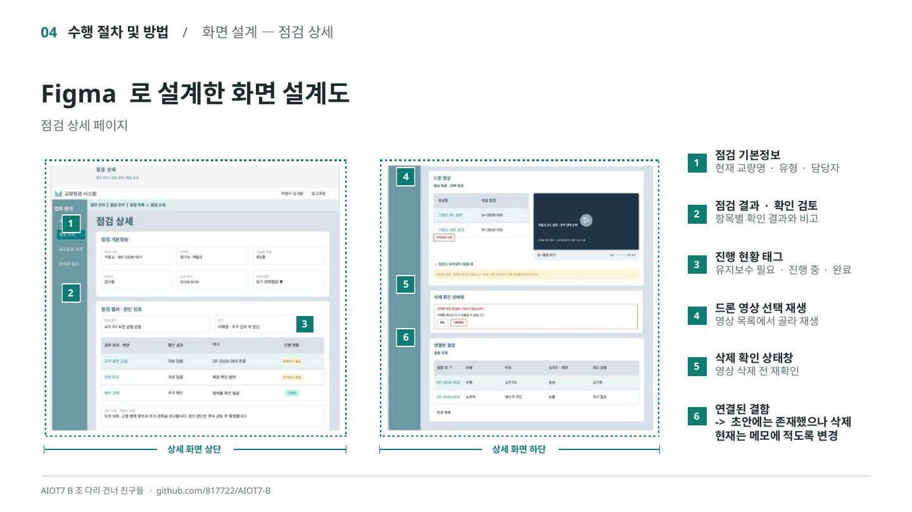
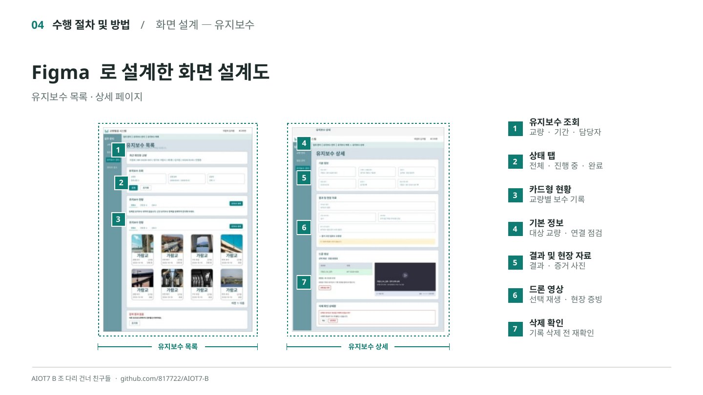

LIST / FILTER
목록과 검색
교량과 점검 기록을 검색 조건으로 좁히고, 최근 확인한 교량과 기록을 다시 찾아갈 수 있도록 구성했습니다.
드론 영상 기반 교량 점검 업무 지원 시스템
흩어져 있는 현장 사진·드론 영상·점검 결과를 교량 단위로 아카이빙하고, 과거 기록을 확인하며 유지보수 작업까지 이어지는 업무용 웹 시스템을 개발했습니다.
기존 점검 자료가 여러 저장 공간에 흩어져 있으면, 하나의 교량을 장기간 관리하면서 지난 점검 이력을 확인하기 어렵습니다.
공공 교량 데이터에서 대상 교량을 찾아 기업별 업무용 교량으로 등록합니다.
교량 하나에 점검과 유지보수 기록을 여러 건 연결하고, 시간에 따라 축적합니다.
기록별 사진과 드론 영상을 저장·재생하고, 과거 점검 자료를 함께 확인합니다.
Spring Boot 서버 렌더링과 REST API를 함께 사용했고, 기업과 사용자 권한을 서버에서 확인하도록 설계했습니다.

전체 시스템은 팀원들과 함께 개발했으며, 아래는 발표 자료에 기재된 제 담당 업무입니다.
점검 목록, 등록·수정 폼, 상세 화면의 데이터 조회와 인터랙션을 구성했습니다.
서브메뉴를 구현하고 점검 화면을 교량·유지보수 UI와 일관된 디자인으로 조정했습니다.
draw.io 기반 플로우차트와 ER 다이어그램 작성에 참여했습니다.
기존 Controller/API를 분석하고 화면과 데이터 연결, 파일 목록 및 권한 표현을 개선했습니다.
아래 이미지는 PPT에 수록된 Figma 설계 화면입니다. 실제 실행 화면 캡처가 아니며, 최종 구현에서는 화면 구조와 일부 기능이 변경되었습니다.

교량과 점검 기록을 검색 조건으로 좁히고, 최근 확인한 교량과 기록을 다시 찾아갈 수 있도록 구성했습니다.

점검 기본정보, 현장 메모, 종합 결과, 검토 의견을 입력하고 사진·영상을 첨부하도록 구성했습니다.

기록을 선택하면 상세 결과와 첨부 자료를 보여주고, 같은 교량의 이전 점검 자료와 비교할 수 있도록 개선했습니다.

별도 업무 영역이지만 조회 패널, 입력 방식, 상세 정보 카드의 디자인 언어를 맞췄습니다.
미디어 조회 결과를 유형별로 구분하고, 중복 렌더링과 개별 삭제 인터랙션을 정리했습니다.
다중 파일 선택, 업로드 대기 목록과 개별 제외 동작을 추가했습니다.
백엔드에서 제공하는 canDelete 정보를 사용해 작성자·업로더 권한에 맞게 버튼을 표시했습니다.
검토 의견 DTO 응답과 프론트엔드 출력을 점검하고, 빈 값 표시도 일관되게 수정했습니다.
프로젝트 시연은 완료했습니다. 편집 중인 영상을 추후 이 영역에 추가할 예정입니다.
현재는 영상이 업로드되지 않았으며, 자동 재생이나 빈 플레이어를 표시하지 않습니다.
기존 코드와 API를 먼저 분석한 뒤 필요한 범위만 수정하는 것이 협업 프로젝트에서 중요하다는 점을 배웠습니다. 특히 화면 설계와 문서화, Git을 활용한 공동 작업, 프론트엔드와 백엔드 사이의 데이터 계약을 확인하는 경험이 큰 학습이었습니다.